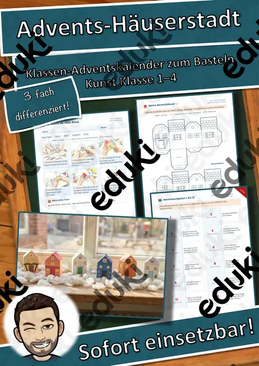
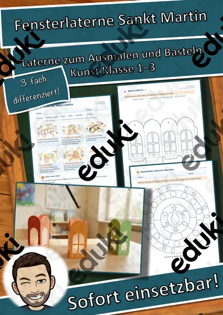
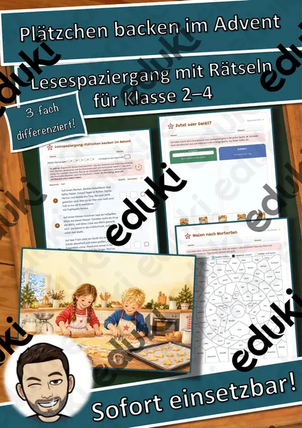
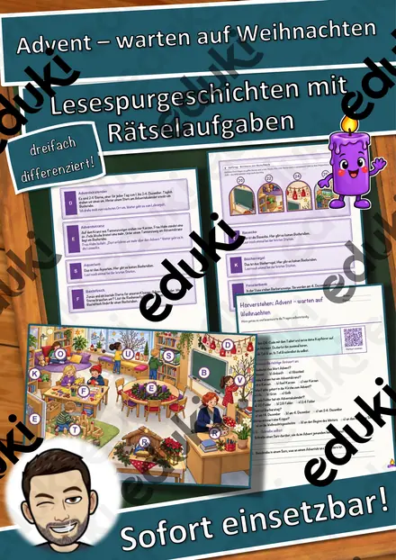
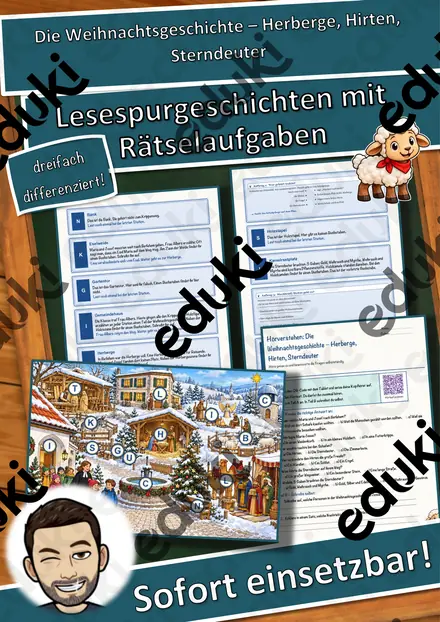
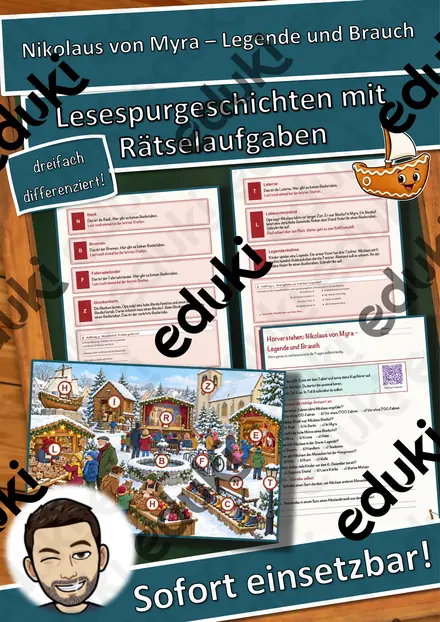
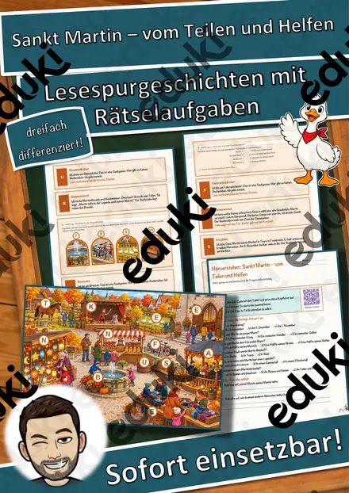
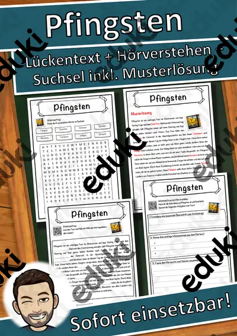
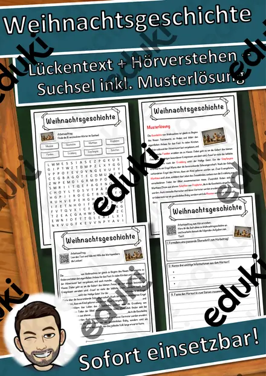

Bibel und christliche Feste: Arbeitsblätter für Klasse 1–6 (Religion)
Biblische Geschichten und christliche Feste sind Standard im Religionsunterricht der Grundschule. Sie erklären Bräuche im Jahreslauf und Quellen unserer Kultur.
Als roter Faden eignen sich Bibel, Weihnachtsgeschichte und Ostergeschichte; Pfingsten, Heilige und Erntedank lassen sich je nach Klassenstufe zuschalten.
In den Lehrplänen der Länder ist das Thema im Fach Religion verankert, meist in den Klassen 1 bis 6. Die Kinder erzählen zentrale Geschichten und erklären, warum Feste gefeiert werden.
Im Alltag einer Lehrkraft zählt, dass Material sofort einsatzbereit ist: Die Blätter zu Bibel und christliche Feste greifen Weihnachtsgeschichte, Ostergeschichte und Pfingsten auf, lassen sich ausdrucken und kommen mit Lösungen, damit die Vorbereitung kurz bleibt. Zur Differenzierung eignen sich die Lesespurgeschichten mit ihren drei Niveaustufen.
Zum Thema finden Sie 36 Materialien, unter anderem Rechenmosaik Paket Winter, Advent und Fasching, Rechenmosaik Paket Herbst und St. Martin: 3 und Advents-Rätselreise Materialpaket Klasse 1–4: 3, verteilt auf 8 Lesespurgeschichten, 2 Lesespaziergänge, 3 Bastelvorlagen und 9 Lückentexte mit Hörverstehen in Klasse 1–7. Eine Bibel in Kinderbuchform zum Anschauen lädt zum Blättern ein, auch wenn nicht alle Kinder Bezug haben.
Das gehört zum Thema
Passende Arbeitsblätter und Materialpakete

Materialpaket Advent für die 5. Klasse: 3 Lesespurgeschichten mit Rätselaufgaben (Weihnachtsstern, Plätzchen backen, Handnähen)

Materialpaket Advent und Winter für die 6. Klasse: 7 Lesespurgeschichten mit Rätselaufgaben (Weihnachtsbasar, Saturnalien, Lichterfeste & mehr)

Materialpaket Advent und Weihnachten für die 3. Klasse: 8 Lesespurgeschichten mit Rätselaufgaben (Barbarazweige, Lebkuchen, Santa Lucia, Sternsinger & mehr)

Rechenmosaik Paket Winter, Advent und Fasching: 4 Motive, lösen – kleben – ausmalen (Klasse 1–4)

Rechenmosaik Paket Herbst und St. Martin: 3 Motive, lösen – kleben – ausmalen (Klasse 1–4)

Advents-Rätselreise Materialpaket Klasse 1–4: 3 Adventskalender mit Geschichten + Rätseln in 3 Stufen, QR-Audio

Materialpaket Ostern Karwoche Ostergeschichte (groß) (auch Homeschooling)

Lesespaziergang DaZ: Sankt Martin – Wortschatz mit Rätseln, 3-fach differenziert (Klasse 1–4)

3D-Anhänger Advent – Oktaeder, Diamant und Kugel zum Ausmalen und Basteln, 3-fach differenziert (Klasse 3/4)

Advents-Häuserstadt – Klassen-Adventskalender zum Basteln mit 24 Adventsaufgaben, 3-fach differenziert (Klasse 1–4)

Fensterlaterne Sankt Martin – Laterne basteln mit Lesetext zur Legende, 3-fach differenziert (Klasse 1–3)

Lesespaziergang: Plätzchen backen im Advent – 3-fach differenziert (★/★★/★★★), Klasse 2–4

Advent – warten auf Weihnachten – Lesespurgeschichte mit Rätselaufgaben (Klasse 2)

Die Weihnachtsgeschichte – Herberge, Hirten, Sterndeuter – Lesespurgeschichte mit Rätselaufgaben (Klasse 2)

Nikolaus von Myra – Legende und Brauch – Lesespurgeschichte mit Rätselaufgaben (Klasse 2)

Sankt Martin – vom Teilen und Helfen – Lesespurgeschichte mit Rätselaufgaben (Klasse 2)

Heilige Schriften der Weltreligionen – Lesespurgeschichte mit Rätselaufgaben (Klasse 7)

Pfingsten Lückentext mit Wortspeicher Hörverstehen und Suchsel

Weihnachtsgeschichte Lückentext mit Wortspeicher Hörverstehen und Suchsel

Reformationstag Lückentext mit Wortspeicher Hörverstehen und Suchsel

Heiliger Lückentext mit Wortspeicher Hörverstehen und Suchsel

Heilige Drei Könige Lückentext mit Wortspeicher Hörverstehen und Suchsel

Bibel Lückentext mit Wortspeicher Hörverstehen und Suchsel

Jesus Lückentext mit Wortspeicher Hörverstehen und Suchsel
Weitere 12 Materialien zum Thema im Material-Finder.
Häufige Fragen
Für welche Klassenstufe passen die Arbeitsblätter zu Bibel und christliche Feste?
Der Schwerpunkt liegt auf Klasse 2; insgesamt deckt die Auswahl (36 Titel) Klasse 1–7 ab. In der Beschreibung jedes Materials steht die empfohlene Stufe.
Welche Inhalte decken die Materialien zu Bibel und christliche Feste ab?
Inhaltlich reicht die Auswahl von Bibel über Weihnachtsgeschichte und Ostergeschichte bis zu Heilige; Details stehen bei den einzelnen Materialien.
Wie setze ich Bibel und christliche Feste im Unterricht ein?
Eine Bibel in Kinderbuchform zum Anschauen lädt zum Blättern ein, auch wenn nicht alle Kinder Bezug haben. Danach genügt meist ein Material als Einstieg und eines zum Üben.
Mehr Material nach Fach und Klasse
- Alle Materialien Deutsch
- Arbeitsblätter Deutsch Klasse 1
- Arbeitsblätter Deutsch Klasse 2
- Arbeitsblätter Deutsch Klasse 3
- Arbeitsblätter Deutsch Klasse 4
- Arbeitsblätter Deutsch Klasse 5
- Arbeitsblätter Deutsch Klasse 6
- Unterrichtsmaterial Klasse 1
- Unterrichtsmaterial Klasse 2
- Unterrichtsmaterial Klasse 3
- Unterrichtsmaterial Klasse 4
- Unterrichtsmaterial Klasse 5
- Unterrichtsmaterial Klasse 6
Verwandte Lehrplanthemen
- Weihnachten und Advent (Religion, Klasse 1–6)
- Ostern und Frühling (Religion, Klasse 1–4)
- Weltreligionen (Religion, Klasse 4–9)
- Addition und Subtraktion (Mathematik, Klasse 1–4)
- Jahreszeiten (Sachunterricht, Klasse 1–4)